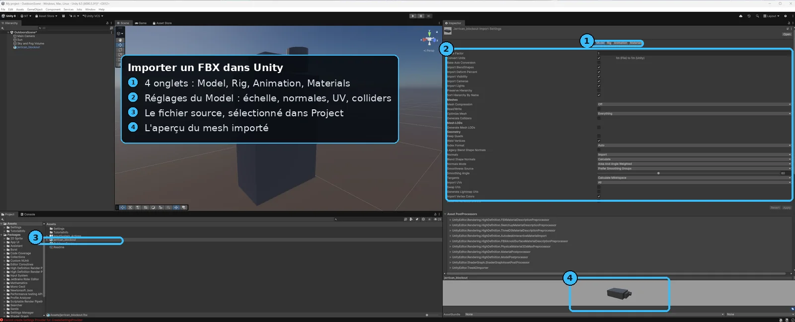

U5 — Import d'assets
À la fin de cette leçon, tu sauras :
- Comprendre que l'import dans Unity n'est pas une copie, mais une recette de conversion stockée dans un fichier .meta, et pourquoi il ne faut jamais le supprimer.
- Régler correctement l'onglet Model d'un FBX : Scale Factor (le piège d'échelle ×100 / ×0,01), normales, tangentes, blendshapes.
- Choisir le bon Animation Type (None / Legacy / Generic / Humanoid) et savoir quand Humanoid sert au retargeting.
- Extraire les matériaux proprement pour ne pas les voir réécrasés à chaque réimport.
- Régler une texture : Texture Type (Default / Normal map / Sprite), la case sRGB (cochée pour la couleur, décochée pour les data maps), les mipmaps, le Max Size et la compression par plateforme.
- Diagnostiquer les erreurs classiques : normal map laissée en Default, sRGB sur une roughness, mipmaps désactivés, échelle multipliée par cent.
Pourquoi c'est important
L'import est le poste-frontière entre le monde de l'authoring (Blender, Substance, ZBrush) et le moteur. Tout asset qui entre dans un projet Unity y passe : un FBX, un PNG, un son, un shader. Et c'est précisément là que se jouent la moitié des bugs visuels qu'on attribue ensuite, à tort, au modeleur ou au moteur. Un personnage qui arrive « géant » dans la scène, un sol dont le relief s'enfonce au lieu de saillir, un métal qui vire au plastique, une texture qui scintille au loin : dans la quasi-totalité des cas, l'asset source est correct, mais ses réglages d'import sont faux.
Dans un vrai pipeline, l'import settings est un contrat : il décrit comment Unity doit traduire le fichier d'origine en données GPU. Le fichier source ne bouge jamais — il reste tel quel dans le dossier Assets/. Ce que tu règles dans l'Inspector, ce sont des instructions de conversion qui seront rejouées à chaque réimport (par exemple quand un collègue récupère le projet, ou quand tu changes de plateforme cible). Bien comprendre ce mécanisme, c'est cesser de « réparer » les symptômes à la main et corriger la source du problème une fois pour toutes.
Enfin, l'import touche directement la collaboration et la performance. Les réglages vivent dans des fichiers .meta versionnés avec le projet ; les supprimer casse toutes les références (un draw call qui pointe sur « rien »). Et le choix de la compression et des mipmaps détermine la VRAM consommée et la netteté à l'écran — sujets repris en profondeur dans U11 — Optimisation.
Théorie en profondeur
1. Ce qui se passe vraiment quand tu déposes un fichier dans Assets
Quand tu glisses un fichier dans le dossier Assets/ de ton projet (ou que tu l'y copies depuis l'explorateur), Unity le détecte, choisit un importeur selon son extension, et produit deux choses :
- Une version compilée et optimisée pour le moteur, rangée dans un cache invisible (le dossier
Library/, jamais versionné). C'est ce que le GPU consommera réellement : un mesh prêt à dessiner, une texture compressée en blocs. - Un petit fichier texte voisin portant le même nom plus l'extension
.meta(par exempleperso.fbx.meta). C'est lui qui contient tous les réglages d'import que tu vois dans l'Inspector, plus un identifiant unique appelé GUID.
Le point essentiel : le fichier source n'est jamais modifié. Unity ne réécrit pas ton FBX ; il en fabrique une traduction à part, pilotée par le .meta. Si tu changes un réglage, Unity réimporte (il rejoue la recette) et régénère la version compilée. Cette séparation source / réglages / cache est le socle de tout le reste de la leçon.
Chaque asset reçoit un GUID (identifiant global unique) stocké dans son .meta. Quand une scène ou un matériau « utilise » une texture, il enregistre en réalité ce GUID, pas le chemin du fichier. C'est génial : tu peux renommer ou déplacer l'asset, les liens suivent. Mais c'est aussi pourquoi supprimer ou régénérer un .meta casse tout : le nouveau fichier reçoit un nouveau GUID, et tout ce qui pointait sur l'ancien devient « Missing ».
2. L'Inspector d'import, onglet par onglet
Quand tu sélectionnes un asset dans la fenêtre , l'Inspector affiche son Import Settings — et non le contenu d'un objet de scène. C'est un point qui déroute les débutants : tu ne modifies pas une copie dans la scène, tu modifies la recette d'import du fichier. Après tout changement, tu dois cliquer Apply en bas pour déclencher le réimport (sinon un Revert annule).
Selon le type de fichier, l'Inspector présente des onglets différents. Pour un modèle 3D, ce sont Model, Rig, Animation, Materials. Pour une image, c'est un panneau unique dominé par Texture Type. Voyons les modèles d'abord.
3. Modèles (FBX) — l'onglet Model
L'onglet Model contrôle la géométrie elle-même : échelle, optimisation du maillage, normales, tangentes. C'est ici que se trouve le piège le plus célèbre d'Unity.
Scale Factor et le piège de l'échelle
La règle d'or d'Unity : 1 unité Unity = 1 mètre. Toute la physique, l'éclairage, la gravité, l'échelle des personnages reposent là-dessus. Le problème, c'est que tous les logiciels 3D ne s'accordent pas sur ce que vaut « une unité ». Historiquement, le format FBX exporté depuis certains outils encode les distances en centimètres ; un cube d'un mètre y est stocké comme « 100 ». Si Unity lit « 100 » comme 100 mètres, ton personnage devient un gratte-ciel. À l'inverse, un FBX déjà en mètres mal interprété peut arriver cent fois trop petit.
Le champ Scale Factor est le multiplicateur appliqué à l'import. À côté, Convert Units tente de réconcilier automatiquement les unités du fichier avec le mètre d'Unity. Et Bake Axis Conversion règle un autre désaccord : l'axe « haut ». Blender et Maya considèrent souvent que le haut est l'axe Z (ou un sens d'axe différent), tandis qu'Unity utilise Y. Sans correction, l'objet peut arriver couché sur le côté, ou avec des rotations parasites de 90° une fois instancié.
Le meilleur réflexe est de modéliser à la bonne échelle et d'exporter en mètres (dans Blender, applique tes transforms et règle l'unité de scène). À l'import, garde Convert Units coché et laisse Scale Factor à 1 ; ne touche au Scale Factor que si, malgré tout, l'objet arrive ×100 ou ×0,01. Pour vérifier : place un cube de référence de 1×1×1 m à côté ; ton asset doit avoir une taille plausible par rapport à lui.
Mesh Compression, Read/Write et Optimize
Mesh Compression réduit la précision des positions, normales et UV stockées, pour gagner de l'espace disque (Off / Low / Medium / High). Attention : c'est une compression avec perte ; trop poussée, elle fait « vibrer » les sommets ou onduler les UV. À réserver aux assets non critiques.
Read/Write Enabled garde une copie du maillage en mémoire centrale (RAM) en plus de la VRAM, pour que des scripts puissent lire ou modifier les sommets à l'exécution (génération procédurale, déformation par code, certaines collisions). Le coût : la mémoire est doublée. Laisse cette case décochée par défaut ; ne la coche que si tu sais qu'un script en a besoin.
Normales et angle de lissage
Une normale indique « vers où regarde » la surface, ce qui détermine sa réaction à la lumière. Le réglage Normals propose :
- Import — Unity reprend les normales telles que ton logiciel les a exportées. C'est presque toujours le bon choix : ton modeleur a déjà défini les smoothing group (arêtes dures / douces) et tu veux les respecter.
- Calculate — Unity recalcule les normales lui-même, en s'appuyant sur l'angle de lissage (Smoothing Angle) : au-delà de cet angle entre deux faces, l'arête devient « dure » (facette nette) ; en deçà, elle est lissée. Utile quand le FBX n'a pas de normales fiables, mais risque d'écraser le travail de lissage du modeleur.
- None — pas de normales (rare, pour des cas particuliers de rendu).
Tangents — indispensables pour les normal maps
Une normal map encode ses micro-reliefs dans un repère local à la surface, le tangent space. Pour le décoder, le moteur a besoin, en chaque sommet, d'un vecteur tangent (et de sa bitangente) en plus de la normale. Le réglage Tangents contrôle leur origine : Import (depuis le FBX), Calculate (Unity les recalcule — souvent le défaut sûr), ou None. Si une normal map éclaire bizarrement après import, une cause fréquente est un calcul de tangentes incohérent entre le bakeur (Substance) et Unity : idéalement, on bake et on importe avec le même espace de tangentes (mikkTSpace, standard partagé).
Blend Shapes
Les blendshapes (déformations faciales pré-modelées, du sourire au clignement) sont importés si la case Import BlendShapes est cochée. Pour un décor, tu peux la décocher et alléger l'import ; pour un visage de personnage, elle est vitale.
4. Modèles (FBX) — l'onglet Rig
L'onglet Rig indique à Unity comment interpréter le squelette du modèle. Le champ central est Animation Type :
| Animation Type | Quand l'utiliser |
|---|---|
| None | Objet sans squelette ni animation : décor, accessoire, prop statique. Le plus léger. |
| Legacy | Ancien système d'animation. À éviter en projet neuf ; présent pour la compatibilité d'anciens assets. |
| Generic | Tout ce qui a un squelette non humanoïde : créature, animal, machine, drapeau, porte articulée. Utilise le système moderne (Mecanim) sans la couche humanoïde. |
| Humanoid | Squelette bipède humain (deux bras, deux jambes, une colonne). Débloque le retargeting. |
Pourquoi Humanoid est-il à part ? Parce qu'il fait correspondre les os de ton squelette à un squelette de référence abstrait, l'Avatar. Une fois cette carte établie, Unity peut rejouer une animation faite pour un autre personnage sur le tien : c'est le retargeting. Concrètement, tu peux acheter un pack « marche / course / saut » sur l'Asset Store et l'appliquer à ton héros, même s'il a des proportions différentes de l'acteur d'origine. Pour Generic, il n'y a pas de référence universelle (un crabe et un dragon n'ont rien en commun), donc pas de retargeting : les animations doivent viser ce squelette précis.
En Humanoid (ou Generic), Unity crée un Avatar : la définition du squelette importé. Tu peux le configurer (bouton Configure…) pour vérifier que chaque os est bien assigné. L'option Optimize Game Objects supprime la hiérarchie de transforms des os de la scène (gain de performance) tout en gardant l'animation ; pratique pour les PNJ nombreux, mais tu perds l'accès direct aux os par script si tu n'exposes pas certains « Extra Transforms ».
5. Modèles (FBX) — l'onglet Animation
Si le FBX contient des animations, l'onglet Animation liste les clips. Tu peux y découper une longue timeline en plusieurs clips (en réglant les frames de début / fin de chaque action), renommer chaque clip, et surtout cocher Loop Time pour les actions cycliques (marche, idle) afin qu'elles bouclent sans à-coup. Le panneau Loop Pose et la Root Transform servent à éviter les sauts entre la dernière et la première frame, et à gérer le déplacement « racine » (le personnage avance-t-il dans la scène, ou court-il sur place ?). Ces réglages sont détaillés côté gameplay ; ici, retiens que le clip est défini à l'import, pas dans la scène.
6. Modèles (FBX) — l'onglet Materials
Un FBX référence souvent des matériaux. Par défaut, Unity peut générer des matériaux automatiquement à l'import — et c'est une source de frustration majeure. Le réglage Material Creation Mode et le bouton Extract Materials… sont là pour reprendre le contrôle.
Le bon réflexe : cliquer Extract Materials… pour sortir les matériaux générés dans de vrais fichiers .mat de ton projet (un dossier Materials/, par exemple). Une fois extraits, ils t'appartiennent : tu peux les éditer, leur brancher tes textures, et ils survivent aux réimports. Le panneau de remapping (On Demand Remap / Search and Remap) permet, en cas de réimport, de réutiliser un matériau existant au lieu d'en recréer un. Sans cette étape, chaque Apply peut régénérer et écraser tes réglages de matériau : c'est le fameux « mes matériaux se réinitialisent tout seuls ».

7. Textures — le réglage qui change tout : Texture Type
Pour une image, l'Inspector est dominé par Texture Type. Ce menu dit à Unity comment interpréter les pixels et quels réglages exposer. Les principaux :
- Default — texture générique (couleur, masque, donnée). C'est le type par défaut, et la case sRGB (Color Texture) y est cochée : parfait pour un albedo, dangereux pour une data map (voir plus bas).
- Normal map — capital. Quand tu choisis ce type, Unity décode le vecteur de la normal map correctement, force l'interprétation en linéaire (pas de courbe sRGB), et peut la compresser au format BC5 (deux canaux haute qualité, idéal pour les normales). Une normale laissée en Default éclaire à l'envers ou paraît délavée.
- Sprite (2D and UI) — pour la 2D et l'interface : débloque le découpage en sprites, le pivot, le pixels-per-unit.
- Autres : Cursor, Cookie (masque de lumière), Lightmap, Single Channel (une seule composante, pour un masque économe).
sRGB (Color Texture) — la case qui fait le lien avec F1 et F7
Comme vu dans F1 et F7, une image stocke soit une couleur perçue par l'œil, soit des données techniques. La case sRGB (Color Texture) indique à Unity dans quel espace lire les valeurs :
- Cochée pour les maps de couleur : albedo (Base Color) et Emissive. Unity applique la courbe sRGB → linéaire avant les calculs d'éclairage, ce qui donne des couleurs justes.
- Décochée pour toutes les data maps : Roughness, Metallic, Height, AO, masques. Ces valeurs sont des nombres bruts (une roughness de 0,5 veut dire 0,5) ; leur appliquer la courbe gamma les décale et fausse le rendu PBR.
C'est l'erreur silencieuse la plus fréquente du débutant : laisser sRGB coché sur une roughness. Le rendu n'a pas l'air « cassé », juste subtilement faux — les reflets sont trop ou pas assez prononcés —, et on cherche le problème dans le matériau pendant une heure.
Alpha Source et Alpha Is Transparency
Alpha Source indique d'où vient le canal alpha : du canal alpha de l'image, calculé depuis la luminance des gris, ou aucun. Alpha Is Transparency traite cet alpha comme de la transparence et corrige le pourtour des zones translucides pour éviter les liserés sombres. Pour un feuillage découpé ou une vitre, c'est ici que ça se règle.
Generate Mip Maps — pour la 3D, toujours
Les mipmaps sont une chaîne de versions réduites de la texture (½, ¼, ⅛…) précalculées (voir F12). À l'écran, le GPU choisit la taille adaptée à la distance de la surface. Sans mipmaps, une texture vue de loin scintille (aliasing) et coûte plus cher à lire (les pixels lus sont éparpillés en mémoire). Pour tout objet 3D, garde Generate Mip Maps coché. Pour de l'UI ou un sprite affiché à taille fixe, décoche-la : les mipmaps ne servent à rien et rendraient l'image floue.
Wrap Mode, Filter Mode
Wrap Mode décide ce qui se passe hors de la plage UV 0–1 : Repeat (la texture se répète — pour un sol, un mur) ou Clamp (le dernier pixel s'étire — pour éviter qu'un bord se reboucle sur l'autre). Filter Mode règle le lissage : Bilinear/Trilinear (lisse, standard 3D) ou Point (no filter) (pixels nets — pour le pixel art).
Max Size et Compression — par plateforme
Max Size plafonne la résolution réellement importée (256, 512, 1024, 2048, 4096…). Une texture source en 4K peut être importée en 1K si le détail à l'écran ne le justifie pas : c'est un levier d'optimisation gratuit. La Compression réduit le poids en VRAM en encodant la texture par blocs (familles BCn sur PC/console — BC1, BC3, BC5, BC7 — et ASTC sur mobile). Le panneau d'overrides par plateforme (onglets Default, PC, Android, iOS…) permet de donner un format et une taille différents selon la cible : une texture peut être en BC7 haute qualité sur PC et en ASTC plus compact sur mobile, sans dupliquer le fichier. Tout ceci est approfondi dans U11.
8. Le système .meta, en pratique
Reprenons le .meta avec ce qu'on sait maintenant. Chaque asset en a un ; il contient le GUID et la totalité des réglages d'import que tu viens de voir. Trois conséquences concrètes :
- Versionne-les avec le projet (Git, Plastic…). Si un collègue récupère ton FBX sans son
.meta, Unity en régénère un avec un nouveau GUID et des réglages par défaut → ton échelle, ton sRGB, ton extraction de matériaux sont perdus, et toutes les références qui pointaient sur l'ancien GUID sont cassées. - Ne déplace/renomme jamais un asset hors de Unity si tu peux faire autrement : dans l'explorateur Windows, tu risques de séparer le fichier de son
.meta. Fais-le depuis la fenêtre Project, qui déplace les deux ensemble. - Le
.gitignoreUnity ignoreLibrary/(le cache, régénérable) mais conserve les.meta. C'est la règle inverse de l'intuition : on jette le compilé, on garde la recette.
🖐Essaie maintenant~1 min
Glisse un .fbx ou .glb dans la fenêtre Project. Sélectionne-le ▸ Inspector (Import Settings) : règle le Scale Factor, coche Import Materials, puis Apply. Enfin, dépose-le dans la scène.
🔧 Démonstration pas à pas
Importons un personnage FBX (en réglant l'échelle et le rig) puis son set de textures PBR (en réglant sRGB et la normale). Crée d'abord un dossier propre : dans la fenêtre , , nomme-le Personnages/Heros.
- Dépose le FBX. Glisse
heros.fbxdans le dossier depuis l'explorateur, ou clic droit . Unity crée aussitôtheros.fbx.metaà côté et compile une version interne. Ce qui se passe : l'importeur de modèle s'est déclenché, l'Inspector montre les onglets Model/Rig/Animation/Materials. - Vérifie l'échelle. Sélectionne le FBX, onglet . Laisse Convert Units coché et Scale Factor à 1. Fais glisser le modèle dans la scène, place à côté un cube () qui mesure 1 m. Ce qui se passe : si le héros fait une tête de plus que le cube, l'échelle est bonne ; s'il fait 100× le cube, mets Scale Factor = 0.01 et clique Apply.
- Règle le Rig. Onglet , passe Animation Type sur Humanoid (personnage bipède). Clique Apply : Unity construit l'Avatar. Ouvre Configure… pour vérifier que tous les os mappés sont verts. Ce qui se passe : tu débloques le retargeting — ce héros pourra rejouer n'importe quelle animation humanoïde de l'Asset Store.
- Extrais les matériaux. Onglet , clique Extract Materials… et choisis un dossier
Materials/. Ce qui se passe : les matériaux générés deviennent de vrais fichiers.matque tu possèdes ; ils ne seront plus écrasés au prochain réimport. - Dépose le set de textures. Glisse
heros_albedo.png,heros_normal.png,heros_roughness.png,heros_metallic.png. Quatre nouveaux.metaapparaissent. Tous arrivent en Texture Type = Default, sRGB coché par défaut. - Règle l'albedo. Sélectionne
heros_albedo: laisse Default, sRGB (Color Texture) coché, Generate Mip Maps coché. Ce qui se passe : la couleur sera décodée en linéaire avant l'éclairage → teintes justes. - Règle la normale. Sélectionne
heros_normal, passe Texture Type sur Normal map, clique Apply. Ce qui se passe : Unity force l'interprétation linéaire, décode le vecteur et propose la compression BC5. Le relief s'affichera dans le bon sens. - Règle les data maps. Sélectionne
heros_roughnesspuisheros_metallic: garde Default mais DÉCOCHE sRGB (Color Texture), clique Apply. Ce qui se passe : les valeurs restent brutes, la roughness 0,5 vaut bien 0,5, les reflets sont corrects. - Branche et compare. Ouvre le matériau extrait, glisse chaque texture dans son slot (U6). Observe le héros sous l'éclairage de la scène : matière crédible = import réussi.
⚠️ Pièges & erreurs courantes
.mat qui t'appartiennent. Utilise le remapping si besoin..meta a été supprimé ou séparé de son asset (déplacement hors Unity). Le nouveau GUID régénéré ne correspond plus aux références existantes..meta d'origine (depuis Git). À l'avenir, déplace/renomme depuis la fenêtre Project et versionne toujours les .meta.🔧Exercice pratique
Importe proprement un asset complet (un FBX + son set de 4 textures PBR : albedo, normal, roughness, metallic) dans un projet Unity, en respectant chaque réglage :
- Importe le FBX, vérifie son échelle avec un cube de 1 m de référence ; corrige le Scale Factor si besoin.
- Règle le Rig en accord avec l'asset (None si c'est un prop, Generic pour une créature, Humanoid pour un bipède).
- Extrais les matériaux dans un dossier
Materials/. - Règle les 4 textures : albedo en Default + sRGB coché, normal en Normal map, roughness et metallic en Default + sRGB décoché ; mipmaps activés partout.
- Branche les textures dans le matériau et observe le rendu sous l'éclairage de la scène.
- L'asset a une taille plausible par rapport au cube de 1 m (pas ×100 ni ×0,01).
- L'Animation Type correspond au type d'asset ; un bipède a un Avatar valide (os verts dans Configure).
- Les matériaux sont des fichiers
.matextraits et survivent à un réimport (teste-le : clique Apply, ils ne se réinitialisent pas). - La normale est en Texture Type = Normal map ; le relief saille dans le bon sens.
- sRGB coché sur l'albedo uniquement, décoché sur roughness et metallic ; Generate Mip Maps coché sur les 4.
- Aucun
.metamanquant ; aucune référence « Missing ».
Vérifie ta compréhension
Clique sur la réponse que tu penses correcte : la bonne réponse et une explication s'affichent aussitôt.
Exercices
Importe un modèle (FBX ou glTF) et vérifie son échelle et son orientation dans la scène.
Voir une piste
Glisse le fichier dans Assets, place une instance, compare sa taille à un objet de référence (un cube de 1 m). Ajuste le Scale Factor des Import Settings si l'échelle est fausse (souvent un facteur 100 entre logiciels).
Importe une normal map, règle son type sur Normal Map, et branche-la dans un matériau.
Voir une piste
Dans les Import Settings de la texture, Texture Type = Normal map. Crée un matériau, branche la Base Color (sRGB) et la Normal Map. Bouge une lumière : le relief doit réagir correctement.
Optimise une texture lourde via compression et Max Size, et compare la mémoire avant/après.
Voir une piste
Réduis le Max Size (ex. 4096 → 1024) et choisis une compression adaptée à la plateforme. L'aperçu en bas de l'Inspector indique la taille mémoire : compare avant/après. Vérifie que la perte de qualité reste acceptable.
- L'import ne copie pas : il compile le source selon une recette stockée dans le
.meta(réglages + GUID). On versionne les.meta, on jetteLibrary/. - FBX : 1 unité = 1 mètre. Surveille le Scale Factor (piège ×100 / ×0,01), garde Convert Units, vérifie avec un cube témoin.
- Animation Type : None (prop), Generic (créature), Humanoid (bipède → Avatar et retargeting).
- Extract Materials pour ne pas les voir réécrasés à chaque réimport.
- Textures : une normal map doit avoir Texture Type = Normal map ; sRGB coché pour la couleur, décoché pour roughness/metallic/AO ; mipmaps activés en 3D ; compression et Max Size par plateforme.
Glossaire des termes introduits
Import Settings — Ensemble des réglages affichés dans l'Inspector quand on sélectionne un asset ; ils décrivent comment Unity convertit le fichier source, sans jamais le modifier.
Fichier .meta — Fichier texte voisin de chaque asset, contenant ses Import Settings et son GUID. À versionner avec le projet ; le supprimer casse les références.
GUID — Identifiant global unique attribué à chaque asset. Les scènes et matériaux référencent ce GUID (pas le chemin), ce qui permet de renommer/déplacer sans casser les liens.
Scale Factor — Multiplicateur d'échelle appliqué à l'import d'un modèle, pour réconcilier les unités du fichier avec la règle « 1 unité Unity = 1 mètre ».
Animation Type — Réglage de l'onglet Rig (None / Legacy / Generic / Humanoid) qui dit à Unity comment interpréter le squelette d'un modèle.
Avatar — Définition du squelette d'un personnage humanoïde, servant de pont entre ses os et un squelette de référence pour le retargeting.
Retargeting — Réutilisation d'une animation faite pour un squelette humanoïde sur un autre personnage de proportions différentes, grâce à l'Avatar.
Texture Type — Réglage qui dit à Unity comment interpréter une image (Default, Normal map, Sprite…) et quels réglages exposer.
sRGB (Color Texture) — Case d'import qui indique de lire la texture en espace couleur sRGB. Cochée pour albedo/emissive, décochée pour les data maps (roughness, metallic, normal).
BC5 / BCn / ASTC — Familles de formats de compression de texture par blocs : BCn sur PC/console (BC5 idéal pour les normales), ASTC sur mobile.
Voir aussi le glossaire global pour les termes transverses (FBX, normal map, sRGB, mipmap, blendshape…).
Pour aller plus loin
- F3 — Formats de fichiers : ce que transporte (et ne transporte pas) un FBX, et les alternatives (glTF, USD).
- F1 — L'image numérique et F7 — Le workflow PBR : le socle sRGB / linéaire derrière la case sRGB.
- F12 — Optimisation : mipmaps, compression et budgets, vus côté principes.
- U6 — Matériaux Unity : brancher les textures importées dans un shader URP/HDRP.
- U11 — Optimisation Unity : réglages de compression par plateforme et Max Size en détail.
- C2 — Transfert d'assets : passer un même asset de Blender à Unity puis à Unreal sans tout casser.